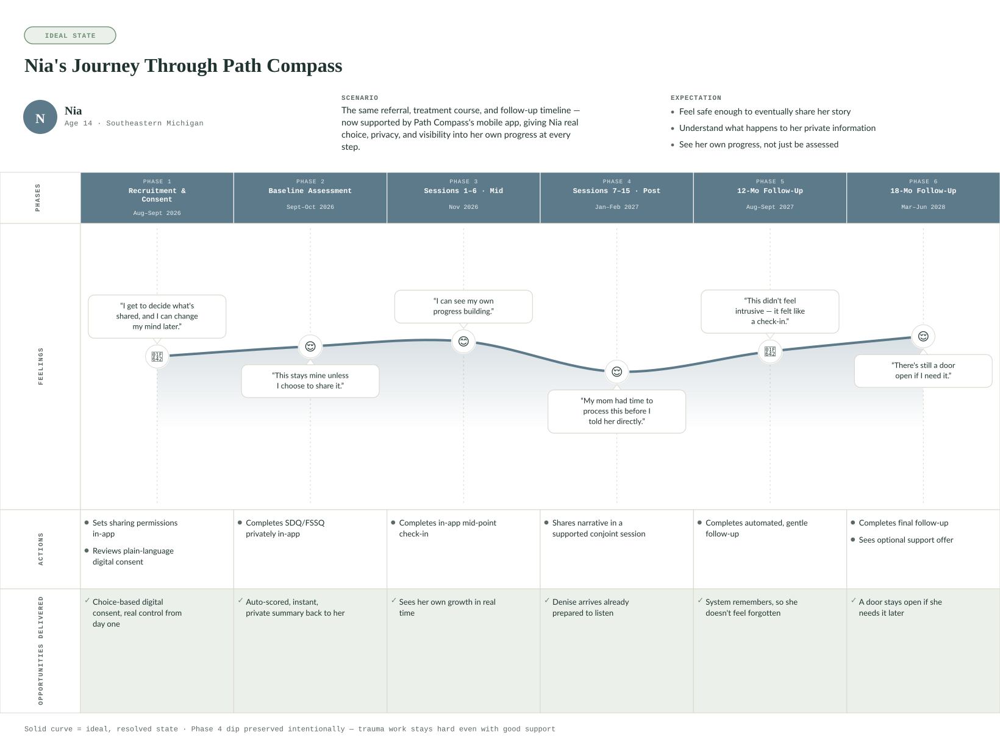

Projects
Selected healthcare UX work.
Case studies at the intersection of UX research, design craft, and public health expertise.
Colleagues across multiple organizations have noted my focus on creating the best possible deliverables and pushing for high-quality outcomes in collaborative environments.
Testimonial 1 of 3
Each project below walks through methods, constraints, and outcomes—from academic healthcare UX to anonymized consulting analysis.

Clinician dashboard mockup for Dr. Laura Mitchell—patient queue, critical alerts, and an AI-supported visit snapshot.
Lumen Chart — EHR Clinical Documentation Redesign
A conceptual UX research and design project addressing provider cognitive overload and inefficient clinical workflows — reimagining how clinicians move through information-dense systems with clearer AI transparency and caregiver-facing summaries.
View case study →
Progressive navigation disclosure prototype—one focused get-coverage menu state at a time on a public health benefits portal.
Healthcare Consulting Case Study
Anonymized usability analysis improving findability of eligibility and enrollment information on a public health benefits portal—behavioral analytics, survey synthesis, and prioritized recommendations.
View case study (password required) →
Ideal-state journey map for Nia (youth participant) across TF-CBT evaluation phases—feelings, actions, and design opportunities.
Path Compass
From Evaluation Plan to User-Centered Design: Supporting high-fidelity Trauma-Focused Cognitive Behavioral Therapy (TF-CBT) delivery and longitudinal outcome measurement in community clinics.
View case study →Focused on accessible, equity-centered digital healthcare tools—with more work shared here as it develops.